Pokémon Data Study: What 1,025 Pokémon Reveal About Type Matchups, Stats, and Rarity
A three-part Pokémon analysis covering type matchups, base stat patterns, and capture rarity across Generations 1 to 9 using Python, pandas, numpy, and matplotlib.
This page follows the working markdown draft for the study and uses the locally copied charts from the original analysis project so it can be deployed independently inside this portfolio site.
You can inspect the cleaned dataset used behind the visuals and notes on this page.
Dataset: "complete_1025_pokemon_dataset.csv"Introduction
Pokémon has been part of my life since childhood. I first discovered it through Pokémon Emerald, then kept playing through the Nintendo DS era and later on the Switch. That long history made this project a fun way to look at a familiar game world through a data analyst's lens instead of only as a player.
The study focuses on three main areas. First, I look at how type matchups behave across single and dual typings. Second, I explore which non-Legendary and non-Mythical Pokémon look strongest on paper through base stats. Third, I compare capture rate, experience growth, and official class to see how rarity is structured behind the scenes.
Core questions: Which types are most common, which typings look strongest offensively or defensively, which Pokémon dominate raw stats, and how clearly do Legendary and Mythical classes separate from the rest?
Section 1: Type Matchups
At first glance, Pokémon type matchups can feel like a simple rock-paper-scissors system. But the moment dual typings enter the picture, the defensive and offensive profile of a Pokémon becomes much more layered. This section uses the draft findings together with the matchup visual to frame the first set of questions.
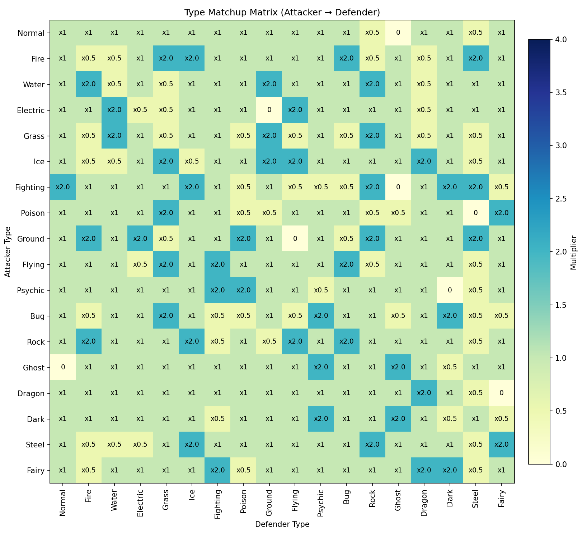
Q1From Generation 1 to 9, which single typing is the most and least common?
The draft identifies Water as the most common single type, with 81 single-type Water Pokémon, and Flying as the least common, with only 4 single-type Flying Pokémon.
That pattern fits the world design of the games. Water Pokémon show up across oceans, fishing routes, rivers, caves, lakes, and coastal areas, while pure Flying is much rarer because Flying is often paired with another type rather than standing alone.
Q2From Generation 1 to 9, which double typing is the most and least common?
The most common dual typing in the draft is Normal/Flying, with 31 Pokémon. Several dual-type combinations appear only once, including Fairy/Ice, Electric/Psychic, Dragon/Fairy, Bug/Ghost, Steel/Water, Normal/Water, Ghost/Ice, Electric/Fire, and Fire/Steel.
Normal/Flying being the leader makes sense because early-route birds have been one of the most repeated design patterns in the franchise since Gen 1.
Q3Which single typing has the best offensive capability?
Fighting and Ground are tied as the strongest offensive single types in the draft, with each one hitting 5 types for super-effective damage.
Fighting is strong against Normal, Ice, Rock, Dark, and Steel. Ground is strong against Fire, Electric, Poison, Rock, and Steel. They arrive at the same result, but they solve different kinds of matchups.
Q4Which single typing has the best defensive capability?
Steel leads the draft as the best defensive single type with a defensive score of 10. It carries 11 resistances and only 3 weaknesses.
That helps explain why Steel types often feel naturally safe in battle even before their individual stat spreads are taken into account.
Q5Which single typing has the worst offensive capability?
Normal is the weakest offensive single type in the draft because it has 0 super-effective matchups and cannot affect Ghost-type Pokémon at all.
That does not make Normal Pokémon weak overall, but it does mean the typing itself offers the least offensive coverage when viewed alone.
Q6Which single typing has the worst defensive capability?
Ice is the weakest defensive single type in the draft, with a defensive score of -3. It has just 1 resistance and 4 weaknesses: Fire, Fighting, Rock, and Steel.
That is one of those findings that lines up closely with how Ice often feels in actual gameplay: dangerous offensively, but fragile once it has to take hits.
Q7Which double typing has the best offensive capability?
Several dual typings are tied for the best offensive coverage in the draft with 7 super-effective matchups. Examples include Grass/Dark, Grass/Ice, Grass/Psychic, Rock/Fighting, and Rock/Psychic.
The bigger point is that dual typing can widen offensive reach much more than a single type can do on its own.
Q8Which double typing has the worst offensive capability?
Several dual-type combinations have only 1 super-effective matchup in the draft. Examples include Bug/Steel, Dark/Ghost, Dark/Poison, Electric/Water, Normal/Ghost, and Water/Ground.
That makes this a good reminder that a typing can be weak offensively while still remaining useful for defensive or utility reasons.
Q9Which double typing has the best defensive capability?
Fairy/Steel and Steel/Ghost are tied in the draft as the strongest defensive dual typings, each with a defensive score of 11.
These combinations resist a large share of attack types while avoiding many harsh punishments, which is exactly why they feel hard to break in battle.
Q10Which double typing has the worst defensive capability?
Grass/Dragon and Ice/Psychic are tied in the draft for the weakest defensive score at -4.
Both combinations suffer from multiple bad matchups and do not gain enough defensive value back to compensate, especially against teams with broad type coverage.
Section 2: Base Stats
The second section looks at the familiar six core stats: HP, Attack, Defense, Special Attack, Special Defense, and Speed. To keep the comparisons more interesting, the draft frames these questions around non-Legendary and non-Mythical Pokémon rather than letting the usual box-art powerhouses dominate every category.
Q11Which non-Legendary and non-Mythical Pokémon have the highest total base stats?
Eternatus Eternamax ranks first in the draft with 1,125 total base stats. The rest of the top end is dominated by special forms such as Mega Evolutions, Primal forms, Ultra Necrozma, and Zygarde Complete Forme.
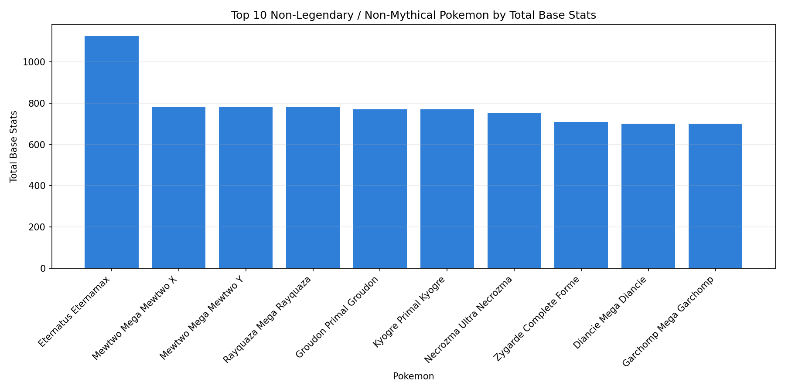
Q12Which non-Legendary and non-Mythical Pokémon have the highest Attack?
Mewtwo Mega Mewtwo X leads the Attack ranking in the draft with an Attack stat of 190. The list is packed with high-power alternate forms, with Kartana standing out as one of the most notable physical attackers in the group.
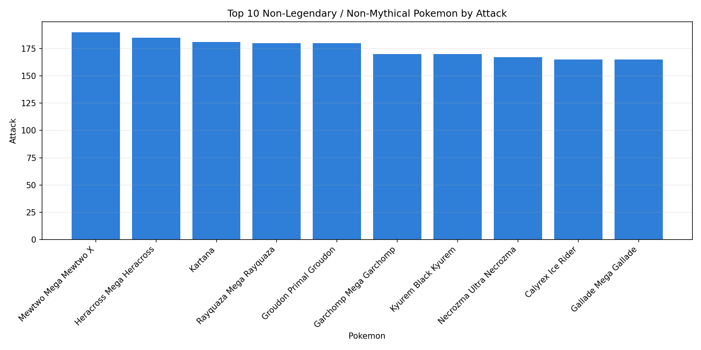
Q13Which non-Legendary and non-Mythical Pokémon have the highest Defense?
Eternatus Eternamax also leads the Defense ranking in the draft with a massive Defense stat of 250. It is followed by defensive standouts like Mega Aggron and Mega Steelix.
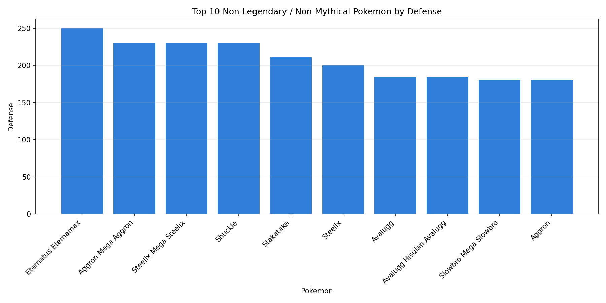
Q14Which non-Legendary and non-Mythical Pokémon have the highest Special Attack?
Mewtwo Mega Mewtwo Y ranks first in the draft with a Special Attack stat of 194. The rest of the list includes names like Mega Rayquaza, Primal Kyogre, and Ultra Necrozma.
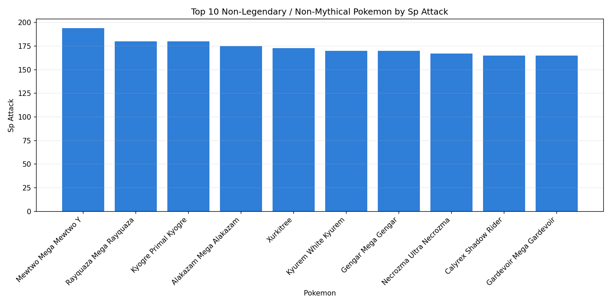
Q15Which non-Legendary and non-Mythical Pokémon have the highest Special Defense?
Eternatus Eternamax also tops the Special Defense list in the draft, reaching 250. The ranking mixes exaggerated forms with natural specialists like Shuckle.
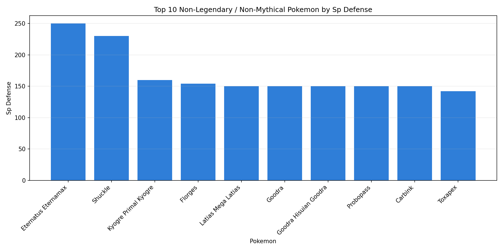
Q16Which non-Legendary and non-Mythical Pokémon are the fastest?
Ninjask is identified in the draft as the fastest non-Legendary and non-Mythical Pokémon in the dataset, with a Speed stat of 160.
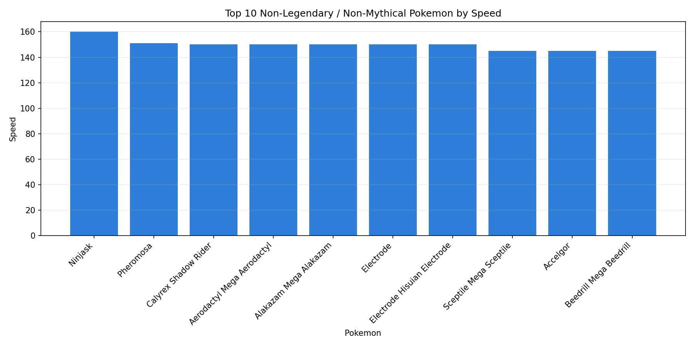
Q17Are Pokémon with higher Defense usually slower?
The draft says no. The relationship between Defense and Speed is effectively negligible, with Pearson at -0.0271 and Spearman at 0.0300.
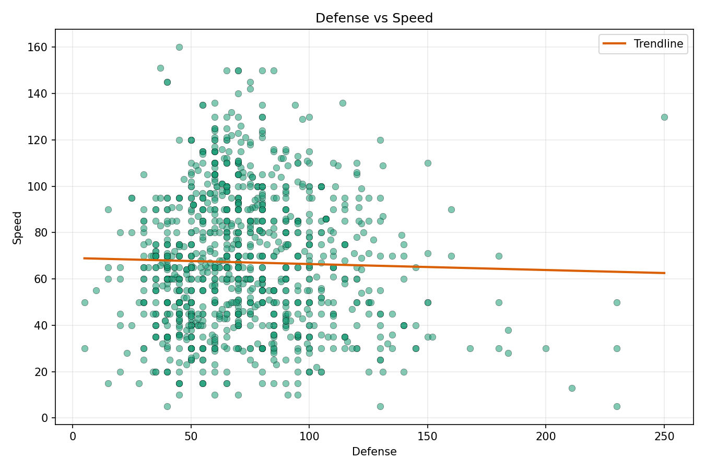
Q18Are Pokémon with higher Attack usually slower?
The draft again says no. Attack and Speed show a weak positive relationship, with Pearson at 0.3337 and Spearman at 0.3283.
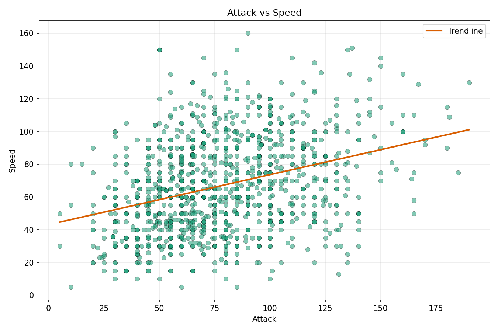
Q19Are Pokémon with higher Special Attack usually slower?
The same pattern appears with Special Attack. The draft reports Pearson at 0.3786 and Spearman at 0.3631, which is also a weak positive relationship.
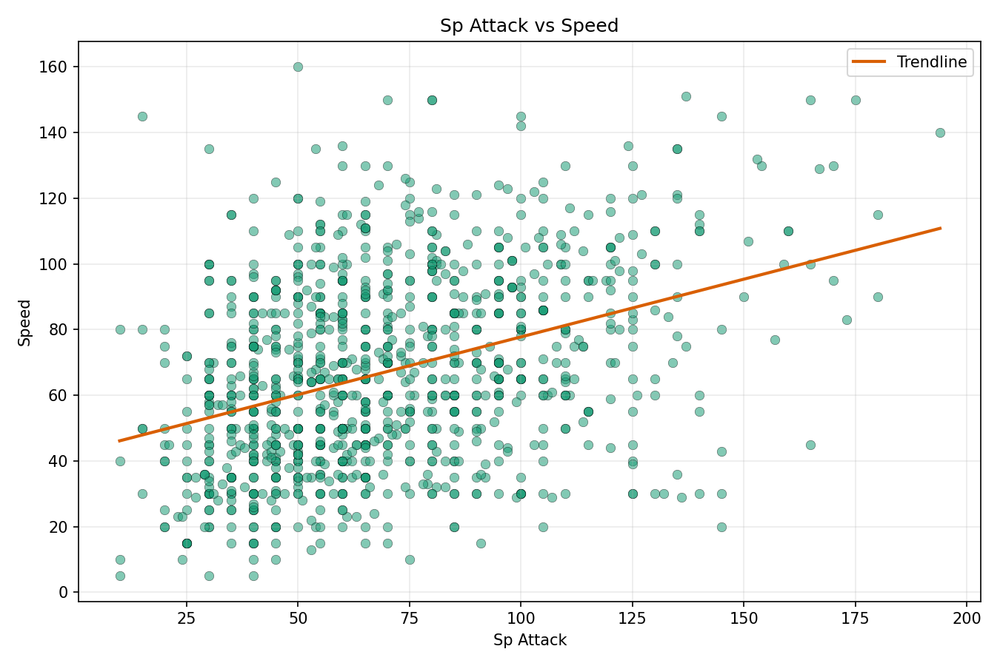
Section 3: Capture Rate, Experience Growth, and Official Class
Not every Pokémon is meant to feel equally obtainable. This final section compares capture rate, experience growth, and official class to see whether the game data supports the idea that Legendary and Mythical Pokémon are designed to be both harder to catch and slower to raise.
Q20Do Legendary and Mythical Pokémon generally have lower capture rates?
Yes. The draft shows a clear gap in mean capture rate: 99.67 for normal Pokémon, 16.65 for Legendary Pokémon, and 9.50 for Mythical Pokémon.
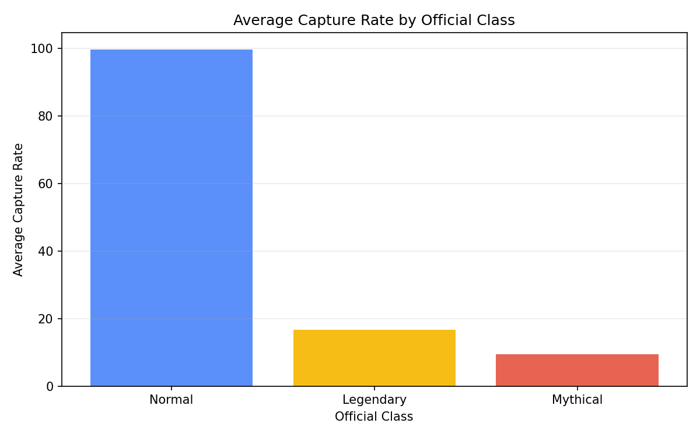
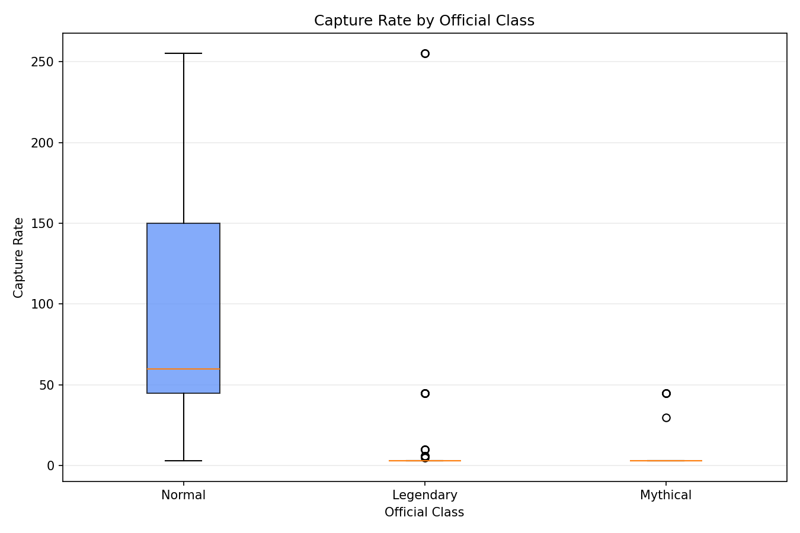
Q21Do Legendary and Mythical Pokémon generally require more experience to reach Level 100?
Yes. The draft gives mean experience growth values of 1,046,900.35 for normal Pokémon, 1,250,000.00 for Legendary Pokémon, and 1,224,648.00 for Mythical Pokémon.
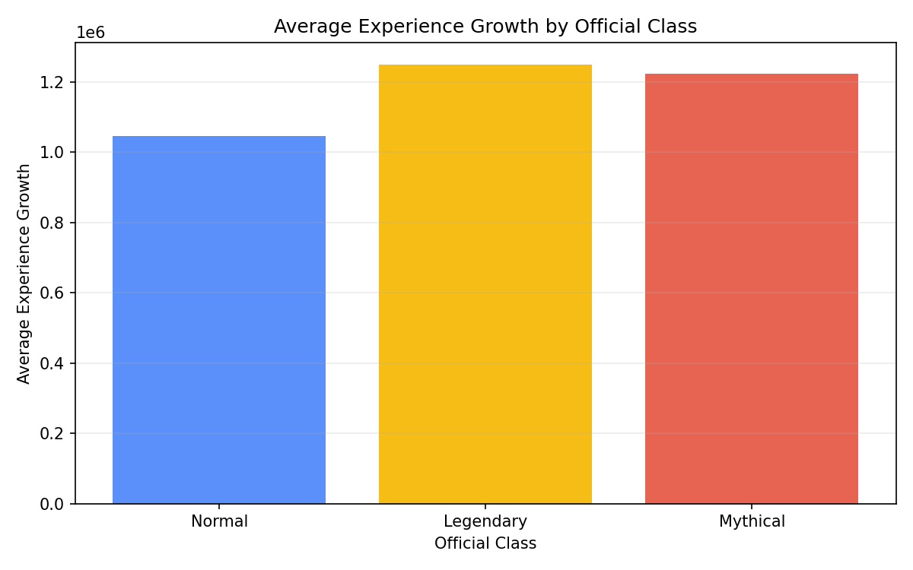
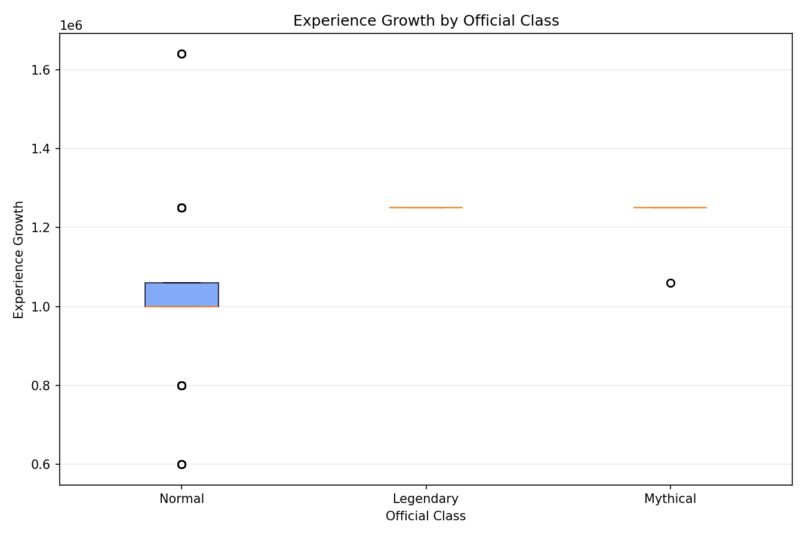
Q22Is capture rate strongly related to experience growth?
Not strongly enough on its own. The draft reports Pearson at -0.2512 and Spearman at -0.4004, which suggests a negative relationship but not one strong enough to explain the whole pattern by itself.
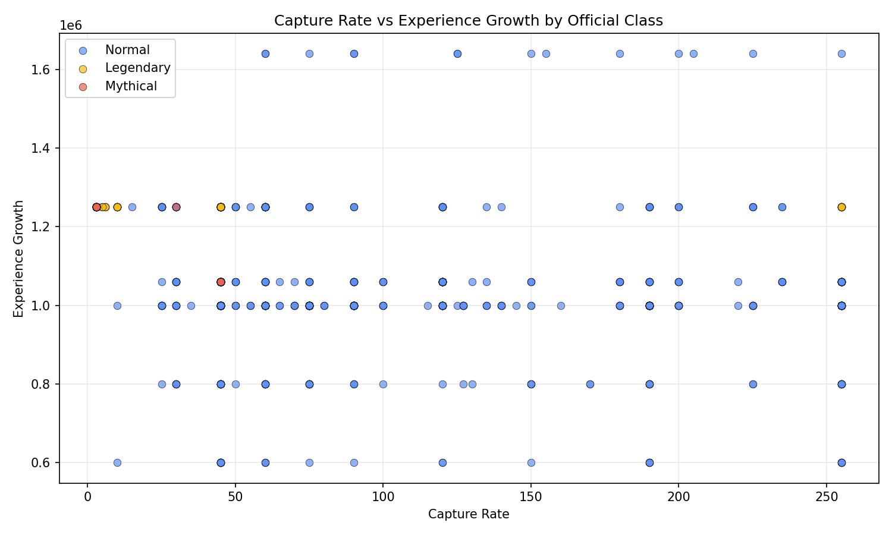
Q23Is official class a stronger signal than raw correlation?
Yes. The draft concludes that official class explains the rarity pattern more clearly than the raw numeric link between capture rate and experience growth.
In practical terms, being Legendary or Mythical tells us more about expected catch difficulty and training curve than the correlation number does by itself.
Key Takeaways
- Water and Normal/Flying dominate the draft counts. The study frames them as the most common single and dual typings across Generations 1 to 9.
- Steel is the standout defensive type. Both the single-type and dual-type findings keep pointing back to Steel-heavy defensive profiles.
- Extreme forms dominate raw stat leaderboards. Mega, Primal, and other alternate forms control much of the top-end stat space.
- High offense does not automatically mean low speed. The draft correlations for Attack and Special Attack both lean weakly positive rather than negative.
- Legendary and Mythical rarity is visible in the numbers. Lower capture rates and higher experience requirements reinforce that these classes are intentionally designed to feel harder to obtain and raise.
Sources
- Pokémon Dataset by Rounak Banik on Kaggle
- All Pokémon Dataset by maca11 on Kaggle
- Pokémon Type Chart Gist by armgilles
- Pokémon Database
- Original Pokémon analysis project on GitHub
This version is built as a portfolio-ready reading page, with the draft narrative preserved and the required images copied locally so the study can be deployed without depending on the old analysis workspace.